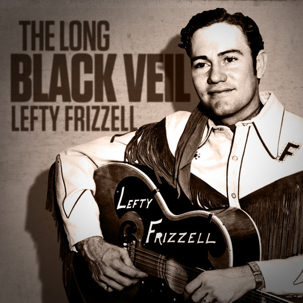

Song written by Danny Dill and Marijohn Wilkin in 1959
Essay written by Herb Bowie on 10 Aug 2022
My earliest memory of this song is hearing it on the first album by The Band, Music from Big Pink, back in 1968. I understood then that this was the one song on the album that was written neither by The Band nor by Bob Dylan, but didn’t know much else about it at the time.
Then, a few years later, I discovered that it was one of the few songs that my father and I both knew, and could play together on our guitars. Turned out he had probably heard it as recorded by The Country Gentlemen on their 1960 album, Country Songs Old & New, or had simply heard this same group perform the song at one of their many shows at the Crossroads, outside of DC, a venue my dad was known to have frequented.
And then, I found the song included on the Rosanne Cash album The List, the title referring to a list of essential American songs as identified by her father, Johnny Cash.
But then, later, it just started to turn up everywhere. I recently heard it on The Pizza Tapes, a loose album recorded by Jerry Garcia, David Grisman and Tony Rice. And when I just searched for it on Apple Music, I found a live version by the Dave Matthews Band. And of course, Mick Jagger sang it with The Chieftains, on an album named after the song. (And my wife and I even heard it performed by Jackshit earlier this year.)
Let’s just review the lyrics now, so that they’re fresh in all our minds.
Ten years ago, on a cold dark night,
There was someone killed 'neath the town hall light.
There were few at the scene, but they all agreed
That the slayer who ran looked a lot like me.The judge said, “Son, what is your alibi?”
“If you were somewhere else, then you won’t have to die.”
I spoke not a word, though it meant my life,
For I’d been in the arms of my best friend’s wife.She walks these hills in a long black veil.
She visits my grave when the night winds wail.
Nobody knows, nobody sees,
Nobody knows but me.The scaffold is high and eternity’s near.
She stood in the crowd and shed not a tear.
But sometimes at night, when the cold wind moans,
In a long black veil, she cries over my bones.She walks these hills in a long black veil.
She visits my grave when the night winds wail.
Nobody knows, nobody sees,
Nobody knows but me.
Given its apparent status as a standard, one might think this to be some ancient tune composed somewhere in the Appalachian hills early in the last century. And the timeless nature of the lyrics certainly lend themselves to that sort of thinking. And the public execution of the narrator on a gallows seems to imply an event happening before 1936, when the last public hanging occurred in the US.
But it turns out the song is really not that old.
“Long Black Veil” was composed by Danny Dill and Marijohn Wilkin in 1959, and originally recorded by Lefty Frizzell, whose single reached #6 on the country music charts.
Given its seemingly timeless popularity, the song is perhaps worth some analysis and commentary.
The basic material seems to come straight out of the bluegrass tradition, given the tragic fate of the two lovers.
But whereas it is sometimes said of bluegrass, “If you want to feel sad, listen to the lyrics; if you want to feel happy, listen to the music,” there is nothing happy about the music here. It is profoundly and unremittingly sad and often dirgelike.
But it also dead simple to play on guitar, and not terribly challenging for a singer, which are most likely other reasons why it turns up so often.
The song is deceptively simple: only three verses and a chorus. In fact, the lack of detail is notable: none of the characters are given a name, there is no description of any of their physical characteristics, and the song has nothing to say about the reasons for the narrator’s love of the woman in the song.
Yet no word is wasted, and the overall construction of the song is brilliant: it is all action, character and atmosphere.
Let’s break it down.
Ten years ago
We are immediately made to understand that we are talking about events that happened some time ago, which perhaps helps to explain why the words are being delivered without much immediate emotion.
On a cold dark night
Well, now we’ve got the atmosphere established.
There was someone killed 'neath the town hall light.
Now we know the event that starts the story, along with a few words to help us picture the surroundings. And we’ve got the couplet structure that will continue throughout the song, one line anticipating the closure to come with the next.
There were few at the scene, but they all agreed
That the slayer who ran looked a lot like me.
The narrator’s role in the story is now introduced, along with foreshadowing of the events to come. We know that there were few at the scene, and it happened at night, beneath a single light, so we can imagine that the eye witness observations were imperfect; and yet they all agreed that the killer looked a lot like the narrator, so we can already imagine how this might appear to a judge and jury.
Also note that the use of the archaic term “slayer” again gives the impression that the song was written long ago.
And here I’ll comment that, although the chorus is sometimes first delivered following this initial verse, that is wrong, as it breaks the dramatic structure of the song.
So let’s move on to the second verse.
The judge said, “Son, what is your alibi?”
“If you were somewhere else, then you won’t have to die.”
Now here I’ll just observe that, although many early folk songs about tragic lovers were not particularly concerned with the delivery of justice, and did not always depict those in power as being scrupulously fair, the judge here seems blameless and, in fact, seems to be going out of his way to encourage the narrator to offer up an alibi. And so there is no questioning here of the social order, no concerns about class structures.
I spoke not a word, though it meant my life,
For I’d been in the arms of my best friend’s wife.
And so now we have all the players identified, and we know the rest of what was happening on the night of the murder. And the sense of foreboding continues to build, as we see the bind in which the narrator is trapped.
And so now, with the lover introduced, and the relationships explained, it’s time for the revelations of the chorus.
She walks these hills in a long black veil.
She visits my grave when the night winds wail.
Nobody knows, nobody sees,
Nobody knows but me.
And so now, for the first time, we realize that this is a ghost story, that the person speaking to us has been dead and buried these ten long years. And we know that the woman’s secret affair was never revealed, that her illicit relationship remained a secret, and yet she still remains in mourning for her lost lover, visiting his grave in a long black veil, when the night winds wail. (If this doesn’t send chills up your spine, then you must be immune to this sort of stuff.)
And now, the depiction of the narrator’s final moments, along with a retelling of the later actions of his lover.
The scaffold is high and eternity’s near.
She stood in the crowd and shed not a tear.
But sometimes at night, when the cold wind moans,
In a long black veil, she cries over my bones.
Upon sober reflection I sometimes think this song might have been conjured up in between watching episodes of Gunsmoke, Perry Mason and The Twilight Zone, all of which were playing on television in the year the song was written, rather than being drawn from any deeper wells of the American experience, or of its expression through song.
But the song is universal in its themes, despite the ostensibly American trappings.
It is a song about justice, and the need to pay for one’s sins (in this case, violation of two of the Ten Commandments, commission of adultery, and coveting of thy neighbor’s wife).
It is a song about faithfulness and loyalty, with the narrator unwilling to compromise the position of his lover, and with the lover continuing to secretly weep over the narrator’s grave, even ten years after his death.
And it is a song that attempts to offer meaningful answers to this question that always torments us: what lives on, if anything, after we die?
The singer says that eternity nears as he is preparing for death, implying that there are some things over which time has no hold, some things that do outlast our mortal coils. And his speaking to us from beyond the grave again implies some sort of eternity. And what form does this eternity take?
Ethical principles live on, and the events of our lives can help to exemplify those important principles for those that follow, especially if they are immortalized in song, and passed on from one to the other.
Love can survive death, and serve as a testament to the enduring meaning of those whose lives have been lost.
Is it any wonder that the song has been passed on from one singer to another so continuously, and that it continues to hold meaning for those who sing it, and those who hear?
It’s a beautiful classic, and deserves to be sung wherever there are humans who remember, and humans to listen.